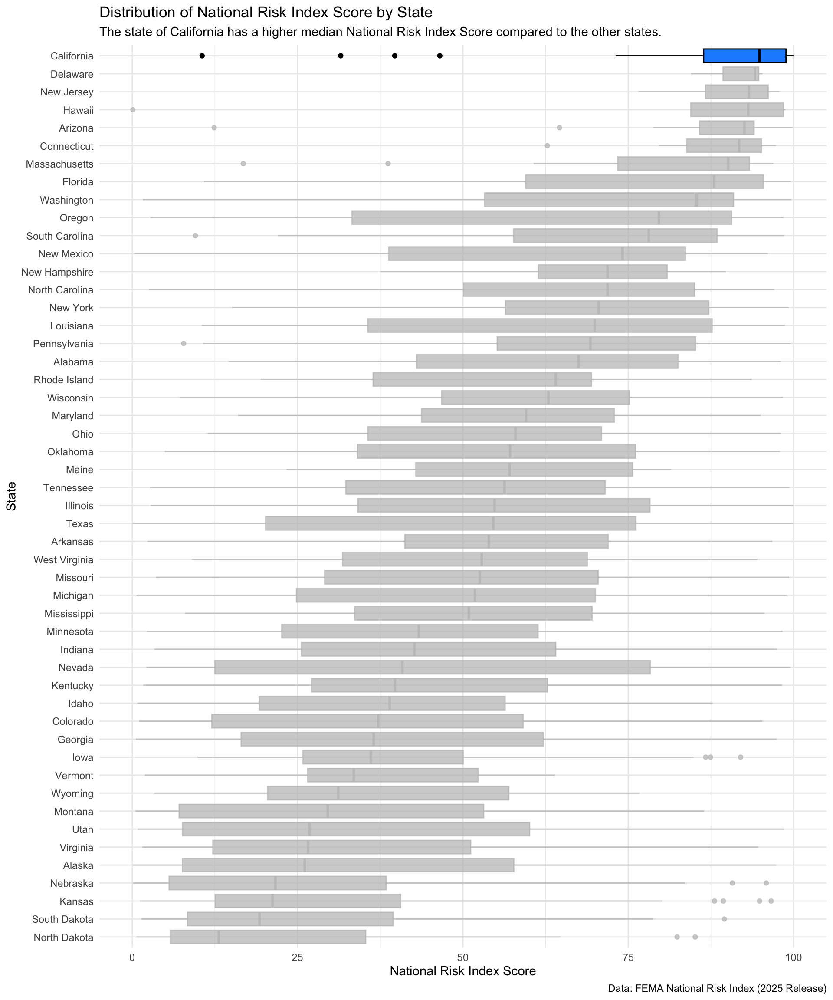
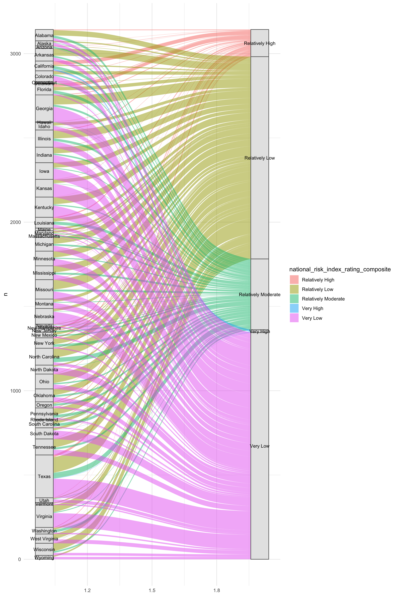
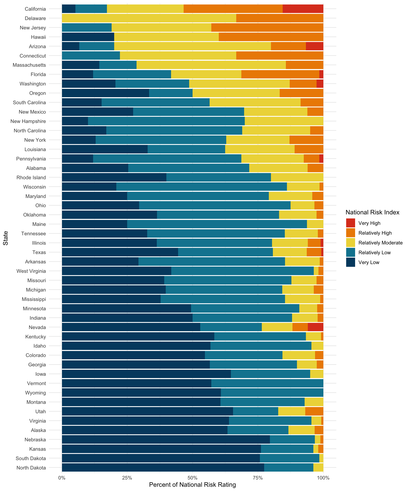

library(tidyverse)
library(janitor)
library(ggridges)
library(ggplot2)
library(networkD3)
library(dplyr)
library(ggalluvial)Visualizing FEMA NRI Data
# Load in data.
fema_data <- read_csv(here::here("data", "National_Risk_Index_Counties_807384124455672111.csv")) %>%
clean_names()# Filtering data to only the United States
states <- fema_data %>%
filter(state_name %in% state.name) %>%
mutate(state_name = fct_reorder(.f = state_name, .x = national_risk_index_score_composite))# Creating a boxplot.
ggplot(data = states, aes(x = national_risk_index_score_composite, y = state_name)) +
geom_boxplot(fill = "dodgerblue", color = "black") +
gghighlight::gghighlight(state_name == "California", use_group_by = FALSE) +
labs(x = "National Risk Index Score",
y = "State",
title = "Distribution of National Risk Index Score by State",
subtitle = "The state of California has a higher median National Risk Index Score compared to the other states.",
caption = "Data: FEMA National Risk Index (2025 Release)") +
theme_minimal() 
# Data wrangling.
alluvium_states <- fema_data %>%
filter(state_name %in% state.name) %>%
group_by(state_name, national_risk_index_rating_composite) %>%
summarise(n = n(),
.groups = "drop")
# Creating an alluvium chart of the ratings.
ggplot(data = alluvium_states, aes(y = n, axis1 = state_name, axis2 = national_risk_index_rating_composite)) +
geom_alluvium(aes(fill = national_risk_index_rating_composite), width = 1/12) +
geom_stratum(width = 1/12, fill = "grey90", color = "grey40") +
geom_text(stat = "stratum", aes(label = after_stat(stratum)),
size = 3) +
theme_minimal()
states <- states %>%
group_by(state_name, national_risk_index_rating_composite) %>%
summarise(n = n(),
.groups = "drop")
# states <- states %>%
# group_by(state_name) %>% mutate(state_total = sum(n)) %>% ungroup()
# Reorder the ratings.
states$national_risk_index_rating_composite <- factor(states$national_risk_index_rating_composite,
levels = c("Very High", "Relatively High", "Relatively Moderate", "Relatively Low", "Very Low"))
# Assign colors to the ratings.
rating_colors <- c("Very High" = "#DD4123",
"Relatively High" = "#ED8B00",
"Relatively Moderate" = "#EED746",
"Relatively Low" = "#0D85A0",
"Very Low" = "#00496F")
ggplot(states, aes(x = n, y = state_name, fill = national_risk_index_rating_composite)) +
geom_col(position = "fill") +
# scale_fill_manual(values = sui_colors) +
labs(x = "Percent of National Risk Rating",
y = "State",
fill = "National Risk Index") +
scale_x_continuous(labels = scales::label_percent(scale = 100)) +
scale_fill_manual(values = rating_colors) +
theme(legend.position = "bottom",
legend.title = element_blank()) +
theme_minimal()
- What are your variables of interest and what kinds of data (e.g. numeric, categorical, ordered, etc.) are they (a bullet point list is fine)?
state_name(Categorical)national_risk_index_score_composite(Numeric)national_risk_index_rating_composite(Ordinal)
- How did you decide which type of graphic form was best suited for answering the question? What alternative graphic forms could you have used instead? Why did you settle on this particular graphic form?
At first I used the national_risk_index_rating_composite variable to create an alluvial/sankey chart that displayed the number of counties within each state that were assigned to/flow to the various ordinal ratings. However, I found this chart hard to read and truly quantify the amount of counties within each state and their associated rankings. I then tried to the creat a stacked bar chart that displayed the proportion of ratings for each state. While quatifying the amount of rankings is easier to do from the stacked bar chart, the graph is busy as there is a lot of states being displayed. While ordering the states by the risk rating, helps to isolate California’s largest percentage of “Very High” National Risk Index. After creating these graphs, I decided that pivoting to a numeric variable national_risk_index_score_composite to implement a boxplot graph would nicely summarize the data. Using a boxplot would allow us to easily identify the medians for each state, without having too much colors or the need to differentiate the sizes of the bars within a stacked bar chart.
- Summarize your main finding in no more than two sentences.
The state of California has a higher median National Risk Index Score compared to the other states.
- What modifications did you make to this visualization to make it more easily readable?
Using gghighlight(), I isolated/highlighted California by changing the color of the boxplot associated to California, while all other box plots remained a grey color. I also reordered the states based on national_risk_index_score_composite, since California has the highest index score California is featured at the top of the graph. Being located and highlighted, draws the audicences attention to the California boxplot.
- Is there anything you wanted to implement, but didn’t know how? If so, please describe.
Within my alluvial chart, I thought it would be interesting to implement a gghighlight() for California.